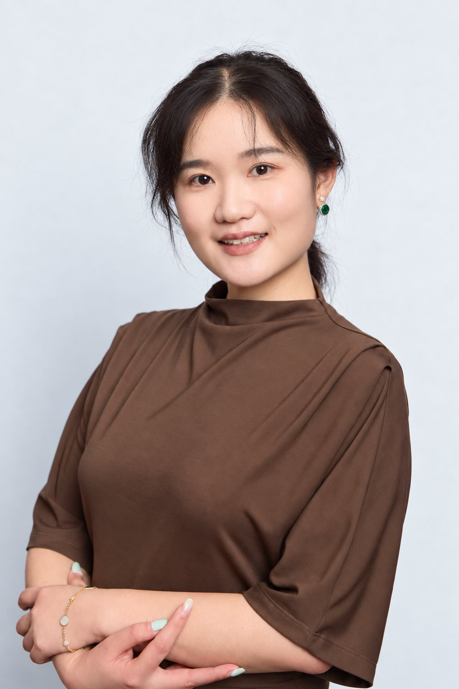

Communication
Product Manager · ECARX
Wrote technical and executive reports for Chinese and European stakeholders, so both sides decided from the same view.
See the experienceEvery customer can achieve more.
Ready to help Microsoft customers turn data, cloud and AI into results.
Nora Jin
My motto“Learn it all, not know it all.”
English · Mandarin · Japanese
Next: Azure Fundamentals, then Power BI Data Analyst.

Version history
Solution Engineering is where all of them meet the customer.
Scroll to travel. Select a release for the story.How I work
One example per habit, each from a different role. Open each one to see the work.
Product Manager · ECARX
Wrote technical and executive reports for Chinese and European stakeholders, so both sides decided from the same view.
See the experienceProduct and Advisory Lead · HelloRide
Started with user research and competitor analysis before recommending how to enter the Australian market. It won the NexStar Excellence Award.
See the projectBackend Developer · GlowCheck
Turned live weather data into simple sun-safety advice young people actually read, built as a serverless app with its own UV analytics.
See the projectSoftware Testing Engineer · iSoftStone
Worked on site with Volvo and Polestar R&D in Gothenburg, joining their defect reviews to find and fix integration issues together.
See the experienceDelivery Lead · PathwayIQ
Made an AI-generated promo video for Gen Z job seekers that shows what their career path could look like.
Watch the videoBusiness Analyst · Symphony3
The crawler quietly missed pages on three council sites. I traced why: redirect loops, duplicate pages and locked pages. Then I designed a fallback where a browser reads what the crawler can't, and every missed page is listed instead of lost.
See the prototypeWe defined the problem ourselves, so we had to prove it was real. About 60 students, teachers and careers advisers took part through interviews, surveys and usability tests, and we went back to them in every iteration.
Students choose between TAFE, apprenticeships and university. Salary, shortage and AI signals sit in separate government datasets they never see.
In one semester, ship a live product that turns that data into a clear choice, and stores no student data.
I built the main screens, integrated the data team's career dataset, added an AI career assistant, and ran Git and releases.
Launched at the Monash Expo. 238 careers, a 6- or 12-question quiz, 0 personal data stored.
I made 70 of the team's 89 commits.
Careers by industry
Pathway
How much AI may change the role
Browsers blocked direct calls to the AI service. I moved the call into a server-side function. That fixed it and kept the API key out of the browser.
Some ratings fall back to simple rules. Next time I'd join the AI exposure data on ANZSCO codes and show students how each rating is made.
Azure OpenAI grounded on the 238 career records with Azure AI Search. Fabric for the data pipeline. Power BI for careers advisers.
Works with
What I've built, and the Azure service I'd use for the same job.
Roadmap
Static Web Apps with Functions, deployed from GitHub.
The career model above, built in Fabric and embedded here.
A grounded assistant on Azure OpenAI that answers from my case studies.
Azure Fundamentals, then Power BI Data Analyst.
Questions
Every question from the preparation notes, with a short answer and a link to the work behind it.
The project, end to end · PathwayIQ
Victorian Year 10–12 students choose between TAFE, apprenticeships and university without seeing salary, shortage or how AI may change a job. That data exists, but it is spread across government datasets they never see.
Full-stack developer and delivery lead in a team of five. I built the quiz, explore, compare and report screens and the AI assistant, integrated the data team's dataset, and ran Git and releases for iterations 2 and 3. I made 70 of the team's 89 commits.
A free, no-login web app. A 6- or 12-question quiz builds an interest profile. Students then explore and compare 238 careers, get a personal report, and ask an AI assistant follow-up questions.
Next.js and TypeScript for a fast front end. Serverless functions, so a student team paid almost nothing to run it. Llama 3.3 on Groq for fast, low-cost answers. Government data cleaned in Python and joined on ANZSCO codes. On Azure I'd use Static Web Apps, Functions and Azure OpenAI.
Privacy over personalisation: no accounts and no stored data, so results live in the session. Honesty over completeness: where growth data was missing, we show "Unknown" instead of guessing. Speed over control: a hosted model instead of running our own.
Launched live at the Monash Expo with 238 careers. Tested with about 60 students, teachers and careers advisers across iterations. Zero personal data stored.
Test with students even earlier. Make the AI-change rating explainable by joining the exposure data on ANZSCO codes and showing the method. Ground the assistant in the career records, not just the quiz result.
Beyond the project
I use AI where it classifies, grounds or speeds up work, and keep a person at the risky step. PathwayIQ's assistant gets the student's quiz context. At Symphony3 I designed a five-agent pipeline that triages council pages, with human review for the hardest. I also run multi-agent tests on local open models.
At ECARX, OEM teams in Sweden and engineers in China often disagreed on release readiness. I agreed Go/No-Go criteria before each review and turned feedback into change-impact assessments, so everyone argued about the same facts. In PathwayIQ, five specialties meant five views; we settled them against what users told us.
I start from what each person has to decide. Students get plain labels like "In demand". Volvo and Polestar executives got one readiness view and the risk. Engineers get the mechanism and where it breaks.
I've worked on each layer: the business, the testing, the product and the code. Solution Engineering is where I use all of them with a customer, and that is the part of my work I've enjoyed most.
Contact
Melbourne · open to relocation · available now · English, Mandarin, Japanese
nuojin@gmail.com